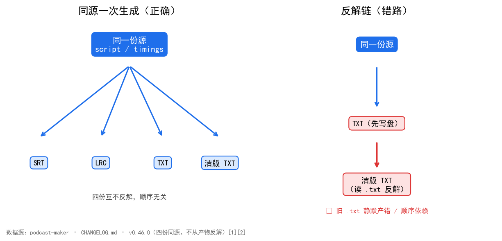

有用户要把字幕喂给外部工具：逐行读取、复制粘贴、再处理。可磁盘上的字幕长这样：
[00:03]小美：欢迎收听《我思故我写系列播客》…
方括号[]是给解析器的定界符，对人阅读、对外部工具就是两层噪声。于是需求来了：给一份「干净」的、摘掉方括号的字幕。
直觉答案很诱人——读磁盘上那份.txt，把方括号拿掉，不就完了？
v0.46.0 把一期出片从三份字幕扩到四份，第四份是整秒 TXT 摘掉时间戳方括号的版本{期号}_clean.txt [1]：
整秒 TXT [00:03]小美：欢迎收听《我思故我写系列播客》…
洁版 TXT 00:03小美：欢迎收听《我思故我写系列播客》…
四份由同一份源、同一次生成，srt / lrc / txt三份逐字节不变 [1]。洁版摘掉方括号后，时间戳仍是定宽一列、与正文之间不留分隔（00:03小美：…），列照旧对齐，又少两个字[1]——既干净，又不破坏排版对齐。
四份产物逐项对照如下：
| 产物 | 时间戳写法 | 方括号 | 列对齐 | 生成方式 | 与源关系 |
|---|---|---|---|---|---|
| SRT | [00:03] | 有 | — | 同源一次生成 | 逐字节一[1] |
| LRC | [00:03] | 有 | — | 同源一次生成 | 逐字节一[1] |
| TXT（整秒） | [00:03] | 有 | 定宽 | 同源一次生成 | 逐字节一[1] |
| 洁版 TXT | 00:03（无括号） | 无 | 定宽、与正文不留隔 | 同源一次生成（关bracket） | 与 TXT 差 2 字符/[1] |
绕弯的那条路，就是开头那个诱人直觉：读磁盘上那份.txt，把方括号摘掉。
这条错路有两个隐性代价，当时没立刻炸，但都是雷：
隐含依赖「txt 必须先存在」。 洁版若去读磁盘上的.txt，就等于声明「生成洁版之前，普通 txt 已经写好」。两份产物从此有了先后顺序——而这份顺序本不该存在。
陈旧数据静默产错。 目录里若躺着上一期的旧.txt（批任务常见），洁版会安静地读那份旧的、拿掉括号，产出一份「看起来对、实则错」的内容，没有任何报[2]。这是最糟的一类 bug：不红、不崩，只是悄悄错。
根因一句话：反解破坏同源律。
四份字幕（SRT / LRC / TXT / 洁版 TXT）本该都从同一份script / timings现生成。一旦洁版去「读另一份产物再加工」，四份就不再是同源——它们变成了「源 + 衍生物」的链条。链条上任一环陈旧、缺失、顺序错，下游就静默出错（见第三节）。反解是隐式依赖与陈旧数据的温床，本质是让产物互为输入。

图 1：同源一次生成（左）与反解链（右）结构对比。数据[1][2]。左：四份都从同一份源现生成、互不反解、顺序无关；右：洁版去读磁盘.txt反解，引入「旧文件静默产错」与「依赖 txt 先存在」两个雷。
四份同源、一次生成，不互反解。
subtitle_engine.build_clean_txt() 是洁版产物，与build_txt共用_build_lyrics与同一个fmt_second_time——不是读磁盘.txt再拿括[3]。
_build_lyrics(..., bracket=True) 共用主体多一个「时间戳带不带方括号」的形[3]。fmt管精度、bracket管方括号，三份歌词产物因此仍是一套清理、一条路径（取起始时间、一行一条、句内换行压空格、说话人判据同源），只是时间戳写法不同。洁版 = 把bracket关掉，其余一字不差。
落点接进既有结构：layout.episode_files()["subtitle_clean_txt"] → 字幕/{期号}_clean.txt；前三份同前缀，洁版在前缀后加_clean，按期号一列仍能把同一期四份捞[3]。pipeline第 6 步写第四份，进result、进 manifest 的assets，产物区多一行「字幕（洁版 TXT）」[3]。
不猜规则：摘方括号的写法照原样搬进来，一个字没发[2]——洁版不是「重新理解」字幕，只是同源输出的另一种写法。
时间戳取整是四份同源最容易漂开的地方。整秒 TXT 用mm:ss，LRC 用mm:ss.xx——两者四舍五入必须落到同一秒，否则同一句在两份产物里差一秒，行对照时错位。
坑在 Python 的round是银行家舍入：round(2.5)得 2。但[00:02.50]按日常「四舍五入」必须进到第 3 秒。直接写round(seconds)会让.50这一档悄然后退，LRC 与 TXT 各走各的进位规则，同源律在此破功（podcast_maker/subtitle_engine.py:267，设计说明见podcast-maker · CHANGELOG.md · v0.44.0 · 新增：一期三份字幕）：
def fmt_second_time(seconds):
"""整秒 TXT 用的 `mm:ss`——LRC 的 `mm:ss.xx` 四舍五入到秒，别处同口径。
**不写成 `round(seconds)`**：Python 的 `round` 是银行家舍入，`round(2.5)` 得 2，
而 `[00:02.50]` 按「四舍五入」必须进到第 3 秒。走整数半加：先量化到**与
`fmt_lrc_time` 同一颗百分秒**，再 `+50 // 100` —— 两条路落在同一根数轴上，
不会一条进位一条不进（`tests/test_subtitle_txt.py` 锁这条同源律）。
"""
seconds = max(0.0, float(seconds))
total = (int(round(seconds * 100)) + 50) // 100
return "%02d:%02d" % (total // 60, total % 60)
关键在+50 // 100：先把秒量化到与 LRC 同一颗百分秒（int(round(seconds * 100))），再整数半加进位。LRC 与整秒 TXT 共用这颗百分秒，两条路因此落在同一根数轴上——tests/test_subtitle_txt.py用「把 LRC 交给离线取整工具，结果须与build_txt逐字节相同」钉死这条同源律。
四份歌词产物（LRC / 整秒 TXT / 洁版 TXT，加 SRT 同源时间轴）不是四套生成逻辑，而是一条主体三个开关。真实实现（podcast_maker/subtitle_engine.py:341）：
def _build_lyrics(script, cfg, timings, fmt, bracket=True):
"""歌词类产物的共用主体——LRC、整秒 TXT、洁版 TXT 只差时间戳怎么写。
同一条歌词不该有三条生成路径：它们取同一份 script、同一份 timings、同一个
说话人判据（`speaker_name_shown`）、同一套「一条一行」清理（句内换行换成空格，
否则一条歌词被劈成两条、只剩第一条带时间戳）。只把**时间戳怎么写**当参数传
进来——`fmt` 管精度，`bracket` 管要不要方括号（只有洁版不要）。「同一份源」
因此是代码级的事实，而不是三处各写一遍、等着哪天漂开。
"""
show_name = speaker_name_shown(cfg)
out = []
for i, item in enumerate(script):
t = timings[i] if i < len(timings) else {"start": 0.0, "end": 0.0}
# 一条一行：句内的换行会把一条歌词劈成两条，只剩第一条带着时间戳
one_line = dict(item)
one_line["text"] = (str(item.get("text", ""))
.replace("\r", " ").replace("\n", " "))
stamp = fmt(t["start"])
body = _caption_text(cfg, one_line, show_name)
out.append("[%s]%s" % (stamp, body) if bracket
else "%s%s" % (stamp, body))
return "\n".join(out)
「同一份源」落实在四处：取同一份script、同一份timings、同一个speaker_name_shown判据、同一套句内换行压空格清理。三份歌词产物只是fmt（精度）与bracket（方括号）两个形参不同——洁版 = fmt_second_time + bracket=False，其余一字不差。
_build_lyrics不是一开始就有的。早先 LRC 与整秒 TXT 各自内联时间戳写法，共用逻辑散在两边，迟早各说各话。重构前的 LRC 片段（两处各写一遍fmt_lrc_time、各自处理「句内换行压空格」）：
def build_lrc(script, cfg, timings):
show_name = speaker_name_shown(cfg)
out = []
for i, item in enumerate(script):
t = timings[i] if i < len(timings) else {"start": 0.0, "end": 0.0}
one_line = dict(item)
one_line["text"] = (str(item.get("text", ""))
.replace("\r", " ").replace("\n", " "))
out.append("[%s]%s" % (fmt_lrc_time(t["start"]),
_caption_text(cfg, one_line, show_name)))
return "\n".join(out)
重构后抽出_build_lyrics，LRC / TXT / 洁版三份只差fmt与bracket：
def build_lrc(script, cfg, timings):
return _build_lyrics(script, cfg, timings, fmt_lrc_time)
def build_txt(script, cfg, timings):
return _build_lyrics(script, cfg, timings, fmt_second_time)
def build_clean_txt(script, cfg, timings):
return _build_lyrics(script, cfg, timings, fmt_second_time, bracket=False)
三份因此回到「同一份源、一次生成」——tests/test_subtitle_txt.py锁的同源律（整秒 TXT 交给离线取整工具转出来，须与 LRC 逐字节相同）才有代码级依托（设计说明见podcast-maker · CHANGELOG.md · v0.44.0 · 新增：一期三份字幕；build_clean_txt复用见podcast-maker · CHANGELOG.md · v0.46.0 · 新增：出片字幕第四份）。
四组证据，测量条件一并给出。
目的：验证「洁版不从磁盘.txt反解」这一承诺——即build_clean_txt的输出，与「把既有.txt反解成同一输入再走build_clean_txt」的输出，逐字节一致。
输入：磁盘上 14 份既有_clean.txt及其对应的.txt。
步骤：只读探针把每份.txt反向解析成build_clean_txt的输入 → 调用build_clean_txt → 与磁盘既有_clean.txt逐字节比[4]（真实核对代码见tests/test_subtitle_txt.py）。
观测：14 对输出，比对字节数。
判定：14 对 / 0 不符 即 PASS；任一不符即说明洁版仍隐含依赖某份既有产物，违反同源[4]。
字节复现（只读探针：磁盘 14 份.txt反解成输入 → build_clean_txt → 与既有 14 份_clean.txt比字节）[4]：14 对 / 0 不符，字节数逐份相同。
前三份未动（16 条快照核对）[4]：sha 一致。
真路径集成（真音频段时长 → 真时间轴 → 四份真写盘，15 项）[4]：全 PASS。
单测（全量python -m unittest discover）[5]：新增tests/test_subtitle_txt.py::TestBuildCleanTxt（8 项）；路径表从三份扩到四份并单列「洁版 = 前缀 + _clean」；其中一条用逐字照抄的正则写成独立实现，交叉验证build_clean_txt——产品改了口径这条就响。全量单测 1242 → 1251 OK。
多份产物要同源一次生成，不互相反解。反解省的一行代码，换的是顺序依赖与陈旧数据两个雷——同源律照旧，代价最小。
| 编号 | 引用 | 出处 |
|---|---|---|
| [1] | 四份字幕同源；洁版摘方括号时间戳仍定宽对齐；srt/lrc/txt 逐字节不变 | podcast-maker · CHANGELOG.md · v0.46.0 · 条目「新增：出片字幕第四份——洁版 TXT」 |
| [2] | 不从产物反解；旧文件静默产错；不猜规则 | podcast-maker · CHANGELOG.md · v0.46.0 · 不做什么段 |
| [3] | build_clean_txt共用_build_lyrics/fmt_second_time；_build_lyrics(bracket=True)；layout.episode_files["subtitle_clean_txt"]；pipeline 第 6 步 | podcast-maker · CHANGELOG.md · v0.46.0 · 新增段 podcast_maker/subtitle_engine.py:build_clean_txt / _build_lyrics |
| [4] | 14 对/0 不符；sha 一致；15 项全 PASS | podcast-maker · CHANGELOG.md · v0.46.0 · 验证段 tests/test_subtitle_txt.py（逐字节复现 / 同源律锁） |
| [5] | 单测 1242→1251；TestBuildCleanTxt 8 项；逐字照抄正则交叉验证 | podcast-maker · CHANGELOG.md · v0.46.0 · 测试段 tests/test_subtitle_txt.py |
| [6] | fmt_second_time银行家舍入陷阱；+50 // 100整数半加共用百分秒；LRC/TXT 同源律 | podcast-maker · CHANGELOG.md · v0.44.0 · 新增：一期三份字幕——SRT / LRC / 整秒 TXT 由同一份源生成 podcast_maker/subtitle_engine.py:fmt_second_time |
◦同书其他篇：#1《进度条永远卡在 0% 和 100%》的_BANDS是「账本」维度的同源——进度只从一张表派生；本篇是「产物」维度的同源——多份字幕只从一份源生成。两条同源律同构。
最后更新：2026-10-08（已补丰富化：四份对照表 + 同源树/反解链图 + 探针实验设计；四检：真实性 PASS / 底层逻辑 PASS / 空推论 PASS / 循环论证 PASS）